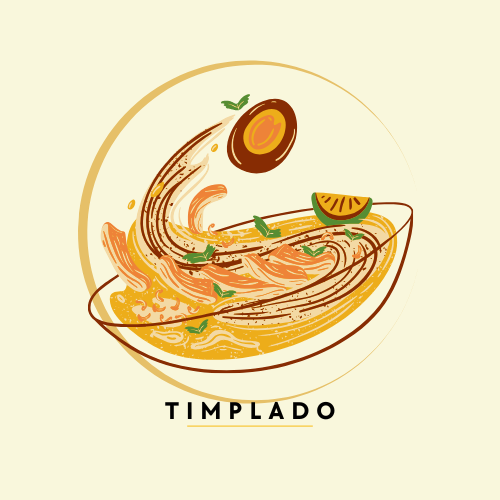

TIMPLADO
Your taste, our tradition.
Discover authentic Filipino recipes, from timeless classics to modern twists.
TIMPLADO brings you the rich flavors of the Philippines — savory, sweet, and everything in between.
Whether you're a beginner or a seasoned cook, our recipes guide you step by step to create meals that feel like home.
Explore. Cook. Share. Relive the joy of Filipino food with every bite.

Craving Filipino food? Browse our collection of authentic recipes —
from adobo and sinigang to halo-halo and bibingka.
Just click and start cooking your favorite dishes!
ADOBO
chicken or pork braised in soy sauce, vinegar, garlic, and spices
SINIGANG
sour tamarind-based soup with pork, shrimp, or fish
LECHON
whole roasted pig with crispy skin and juicy meat
KARE-KARE
peanut stew with oxtail, tripe, and vegetables
PANCIT
Filipino noodles (like Pancit Canton or Pancit Bihon)
LUMPIA
Filipino-style spring rolls (fried or fresh)
HALO-HALO
shaved ice dessert with milk, fruits, beans, and leche flan
SISIG
sizzling pork with calamansi and chili, usually with egg on top
LAING
taro leaves cooked in coconut milk and chili
BULALO
beef shank soup with bone marrow
BICOL EXPRESS
spicy pork in coconut milk and chili
CALDERETA
beef or goat stew with tomato sauce and liver spread
TOKWA'T BABOY
tofu and pork with vinegar-soy dip
KUTSINTA
steamed rice cakes
BIBINGKA
coconut rice cake, often eaten during Christmas
CHAMPORADO
chocolate rice porridge, usually paired with dried fish (tuyo)